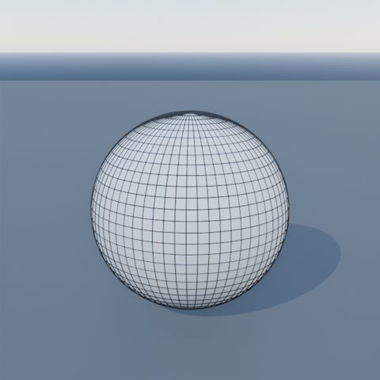
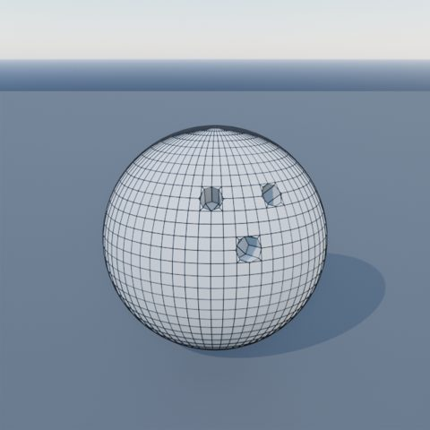
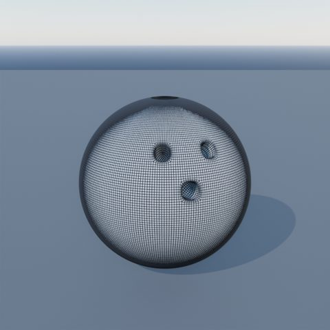
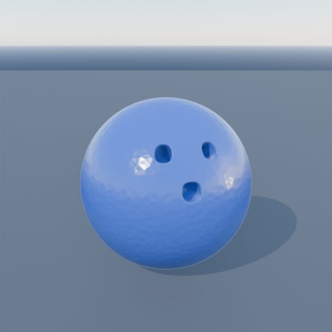
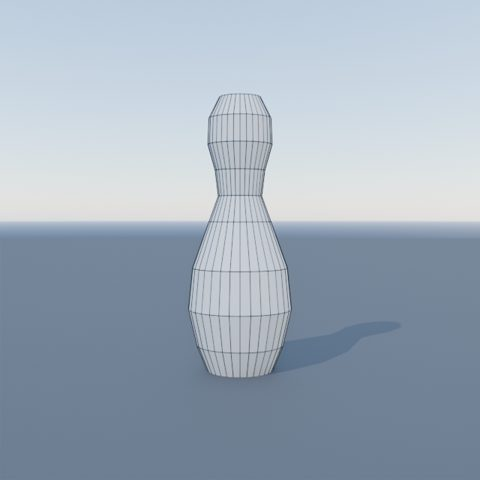
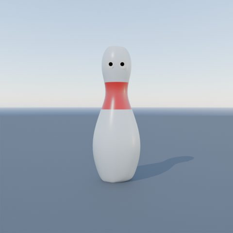

A1
UV сфера
Сфера с гъста мрежа.
- A Xизтрий всичко
- Shift AMesh ▸ UV Sphere
- панел долу влявоSegments 64 · Rings 32
ЗащоПовече лица = материал за дупките. Лица = Segments × Rings.
КапанПанелът изчезва при следващото действие. F9 го връща.
Топка, три кегли с очи и пет секунди анимация. Шест части, всяка с кратки стъпки.
Прозорецът на Blender 5.2. Обиколката минава през всяка зона; клик върху ред я показва.
Сфера с три дупки за пръстите
Сфера с гъста мрежа.
ЗащоПовече лица = материал за дупките. Лица = Segments × Rings.
КапанПанелът изчезва при следващото действие. F9 го връща.
Ръб около всяка бъдеща дупка.
Повториза другите две дупки.
Квадратът става кръг.
ВниманиеВсяка дупка поотделно. Иначе трите стават един общ кръг.
Всеки пръстен влиза навътре по своята посока.
Защо NormalZ сочи по нормалата на лицата. С Global трите дупки отиват право надолу.
Затвори дъното с чиста мрежа.
ПравилоПръстенът трябва да има четен брой точки.
От многоъгълници към гладка топка.
БързоCtrl 2 добавя Subdivision ниво 2 наведнъж.




Профил пръстен по пръстен
Тяло, шия, глава от един кръг.
Оформяй, докато виждаш гладкия резултат.
Две очи и две зеници.


Под, камера, йерархия, три кегли
Нагласи кадъра, като се движиш в него.
Кеглата носи очите, окото носи зеницата.
ПравилоПоследният избран е родителят.
Копирай кеглата заедно с очите.
Материал с един цвят, без възли
Обектът получава собствен цвят.
Избери цвета. Повтори за всеки обект.
Един материал, много обектиСмениш ли цвета, сменя се навсякъде.
Втори цвят само на част от обекта.
СлотМясто за материал в обекта. Assign казва кои лица ползват кой слот.
Посока, обектив, фокус
Една посока на светлината и ясни сенки.
SunВажи само посоката. Където и да стои, свети еднакво.
Плосък, театрален кадър.
ЕфектБлизко и далечно изглеждат почти еднакво големи.
Рязка кегла, мек фон.
Поза към поза, после тайминг
Всичко за анимация на един екран.
Ключовете не се преливат. Първо таймингът.
ConstantПозата стои до следващия ключ. Когато таймингът е готов: T ▸ Bézier.
Влиза, подминава, връща се.
ТъркалянеЪгъл = изминат път ÷ радиус.
Кеглите забелязват топката.
I в 5.2Записва Location, Rotation, Scale веднага. Меню с избор: K.
Трима герои, не един робот.
Подготовка, разтягане, дъга, приземяване.
ОбемРасте ли Z, X и Y намаляват. Shift Z = всички оси без Z.
Втората кегла скача като първата, от своето място.
КапанБез ☑ Only Show Selected F-Curve Keyframes (F2) кутията хваща и другите криви.
Топката се засилва назад и профучава. Кеглите отскачат.
Ударът се усеща.
Само каналите за мащаб, без да пипаш погледа.
scale: остават само мащабитеВажат във всяка програма.
Клавишната карта по подразбиране на Blender 5.2.
| Клавиш | Действие | Къде | Стъпка |
|---|
Името е както в интерфейса.
| Термин | Какво е | Стъпка |
|---|
C:\NHA\_Асистент\Уроци\CBaileyFilm_кегли\kegli_rebuild_5.2.blend
Топка, три кегли с очи и йерархия, цветове, Sun, камера с фокус, анимация 1–124. Направена и проверена в Blender 5.2.